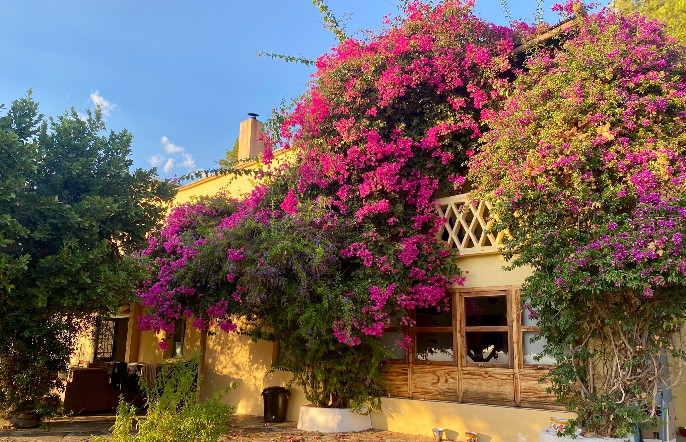
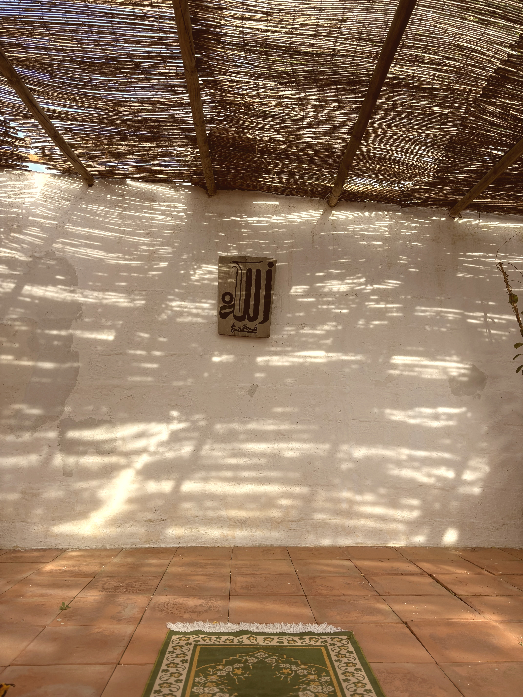
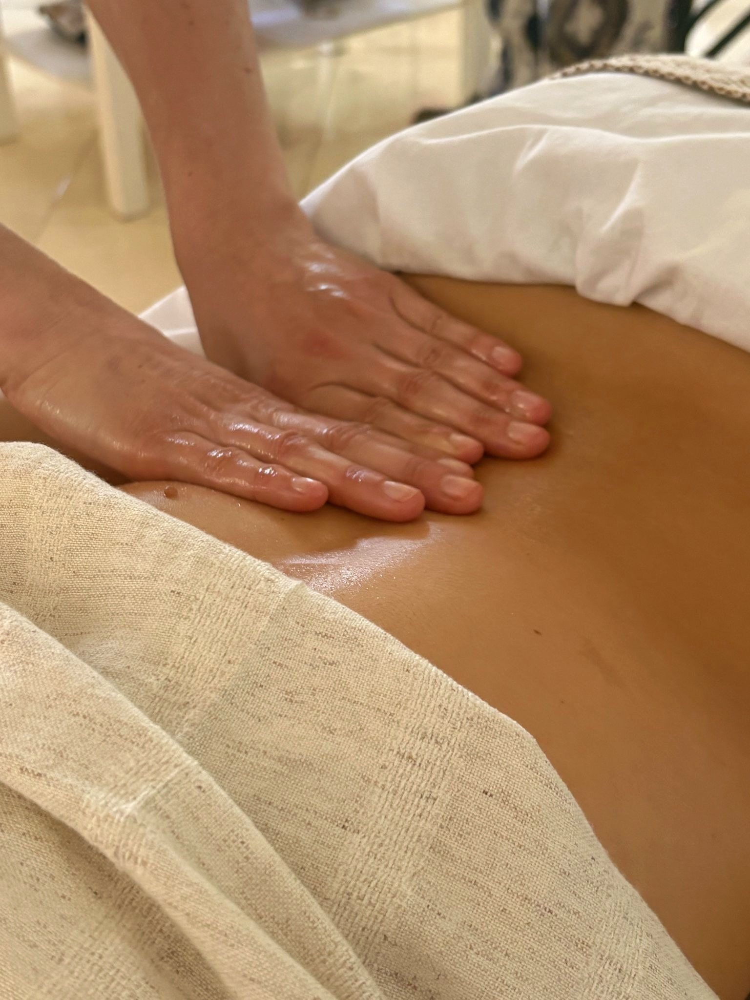
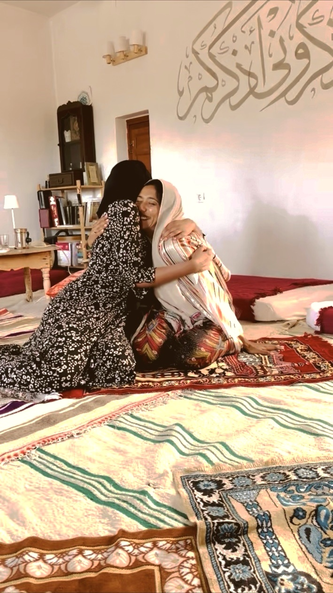
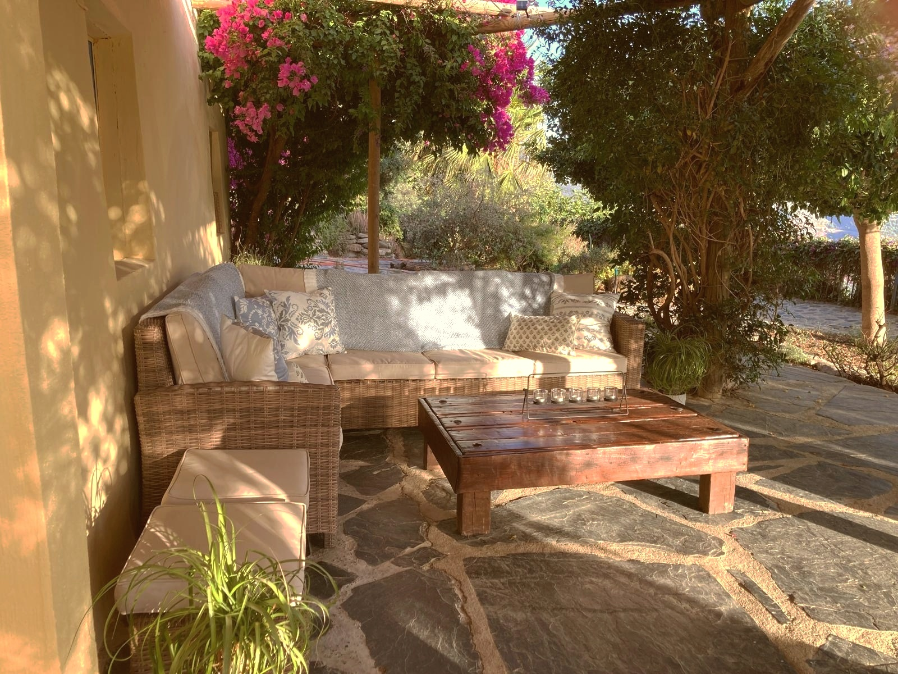
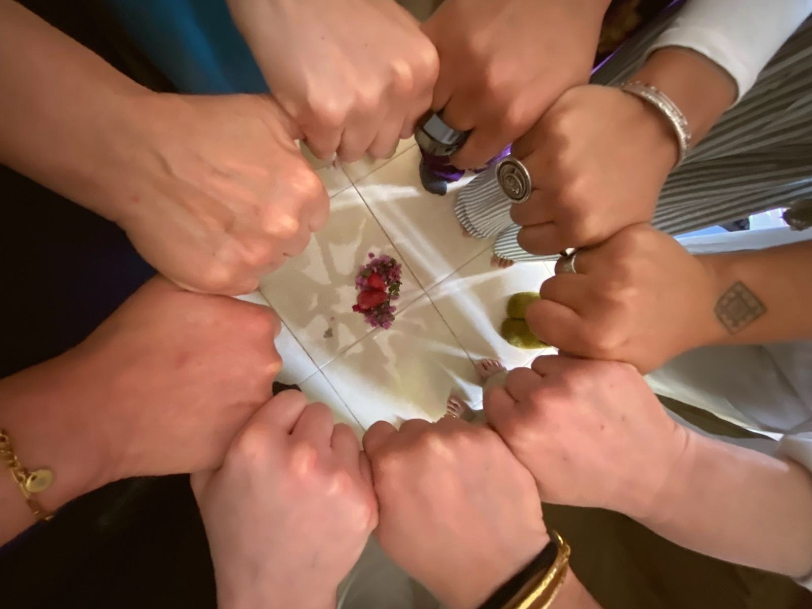
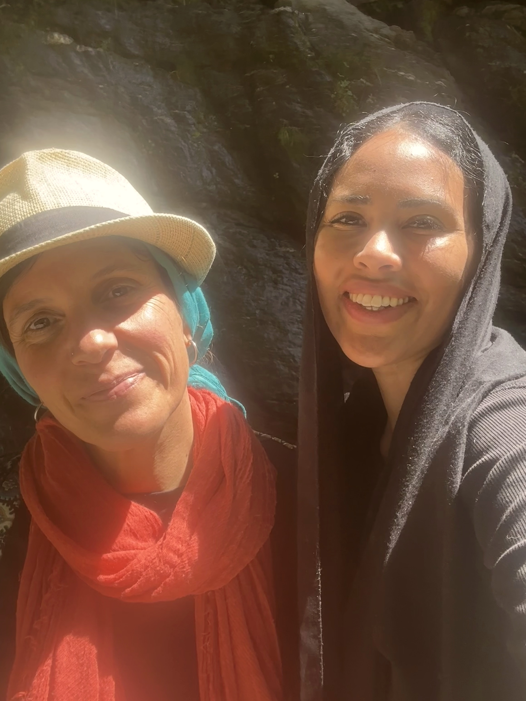

Órgiva, Andalusia · 29 Nov – 5 Dec 2026
A winter somatic retreat to nourish your body, hormones, and spirit
Six nights in the foothills of the Sierra Nevada — somatic bodywork, Sufi wisdom, and the inner seasons of womanhood. €2,100 per person, shared room.

Where We Stay
Our home for this retreat is a rustic villa tucked into the hills of a little village called Órgiva, in Andalusia, where the Sierra Nevada meets the valley in folds of olive groves and running water. Rooms are shared and simple, built not on luxury but on nearness, to the land, to each other, and to Allah.
Órgiva carries the weight of the final chapter of Muslim Spain. This was Morisco (the term for Spanish Muslims) country, the last refuge of those who would not abandon their faith even when forced to wear another one, the mountains that sheltered them through rebellion and, finally, through exile. Their presence still lingers in the mountains and in the water channels that still run through the valley, in the quiet defiance the land seems to remember.
Today, Órgiva holds a different but related thread: a living Muslim community, drawn here by the same mountains that once hid the Moriscos, still finding in this valley a place to seek nearness to god. Throughout the retreat, we will walk through this history, tracing what remains and what was lost, and finding, in the mountains that have always held onto faith against the odds, our own inner strength.
The Retreat's Essence
We wake before the sun, in the crisp hush of the Andalusian winter, and gather for fajr as the sky over the mountains turns from black to grey to gold. There is a particular kind of presence that only comes at this hour, before the valley wakes, before the day asks anything of you.
From there, the days move slowly and deliberately. Gentle movement to settle the body. Long walks into the hills, where the crisp winter air fills your lungs, and the mild sun warms your skin without demanding anything back. Meals built from what the valley itself grows, prepared by a private chef nourishing you from the inside out.
At the heart of each day are the somatic sessions themselves, held by certified practitioners, where we will learn how emotion settles in the body, how it can move again when it's finally met with attention, and what this has to do with drawing nearer to yourself and therefore Allah, not despite the body, but through it.


What You Will Receive
Delivered through embodied practices and lectures
All teachings are grounded in the Islamic principle of tawheed.
Additional Treasures


Offerings & Investment
The total price is €2,100 per person for a shared room. Includes 6 nights and 7 days of accommodation.
A rustic villa in the mountains of Andalusia, shared rooms, maximum 2 people per room.
Three meals a day. Lunch and dinner prepared by a private chef, breakfast is communal, self-service. All meals are halal. Please let us know of any dietary restrictions in advance.
All daily activities, workshops, lectures, and visits are included. Each day includes guided movement or a walk, and one lecture or workshop. Also included: a visit to a Muslim eco-farm, a local mosque, and the village.
Every participant receives a welcome gift, items to carry your self-care practice beyond the retreat.
Each participant may select one complimentary 60-minute private taster session with a certified practitioner: Mizan womb massage, head and face somatic massage, facial acupuncture, or lymphatic drainage. Entirely optional. Additional sessions are €65, subject to availability.
Group size is kept deliberately small, so every participant gets real time and attention.
This is a journey into sisterhood. You'll connect with the other women before you arrive, through a pre-retreat group call, a post-retreat call, and a WhatsApp group to stay in touch.
All participants sign a privacy waiver. What's shared in the retreat stays in the retreat. No photos are taken or published without permission.
Reserve Your Spot
A £100 deposit (via Square) secures your place, deducted from the full €2,100. The deposit is refundable within 14 days of booking, and non-refundable after that. Full balance due by 15 October, refundable until 20 October. We'll follow up with a short call to make sure this retreat is the right fit for you.
How to Book
What's Not Included
Not included. The closest airport is Málaga. We're happy to help with booking.
Arrival times vary too much to arrange group transport, but we can help you book a taxi. Typical rate is €30 per person, shared with 3 people.
Optional trips to the village, eco-farm, and mosque are included, but anything purchased during those outings is not.

Meet Your Facilitators
Hannah and Sofia bring together two threads of the same work: the body as a place of healing, and faith as the ground it stands on.
Hannah is the founder of Nora Wellbeing and a certified somatic practitioner in Mizan therapy, facial and head massage, and lymphatic drainage. Before this work, she spent years as a diplomat, delivering women's rights and health programmes around the world, and holds an MSc in Health and Population from the London School of Economics. Nora Wellbeing grew from the same conviction that shaped her diplomatic work: that a woman's body holds wisdom worth listening to, and that healing happens through ritual and presence, not just treatment.
Sofia has spent over a decade supporting women's health through Mizan Therapy and holistic bodywork, trained and later teaching under Bushra Finch, the founder of Mizan Therapy. Based in the Granada region herself, her path into this work grew from her own experience of cyclical health, pregnancy, and postpartum, and from a belief that the body holds wisdom worth listening to. After a two-and-a-half-year apprenticeship, she now teaches on the Mizan practitioner courses herself, passing on to others the same work that once transformed her.

Reserve Your Place
If this retreat is calling to you, we'd love to have you.